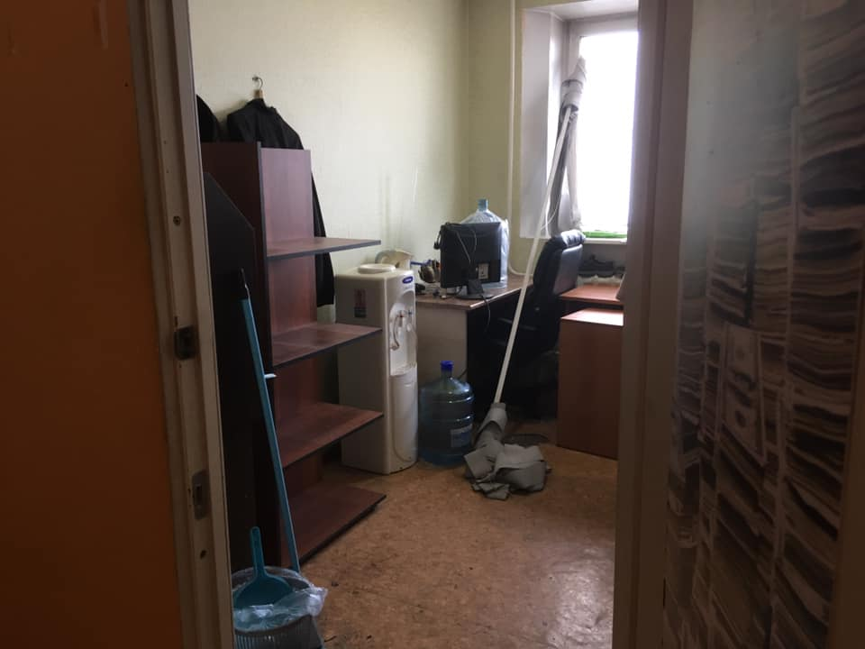

Окончательно распрощался с офисом на Соборной, 8.
Вообще, в Кемерове много так называемых офисных зданий, которые вгоняют арендаторов в непременную депрессию. Эти здания объединяет одно: они были так или иначе приватизированы в 90-е. Бывшие НИИ и общаги. Приватизированы часто кусками. Если лет 10-15 назад это был интересный бизнес, обеспечивающий собственникам ежемесячную «котлету» на забавы, то сегодня, после череды кризисов и самовыпилов разных ИП и ООО всё стало весьма грустно.

Офисные здания вроде Соборной, 8, Спортивной, 28, Красноармейской, 122, Ленина, 77, не говоря уж про Зэту, превратились в гетто для предпринимателей. Разномастные железные и деревянные двери, пустые и опечатанные кабинеты, порванный линолеум, тусклый белый свет квадратных светильников в потолках Армстронг, вечно курящие, отбывающие срок в офисе бездельники на входе. Всё это сводит с ума тех, кто не хочет привыкать.
Когда забирали кое-какие вещи, обратил внимание на обилие так называемых студий дизайна ногтей и прочих салонов красоты на Соборной. Думаю, их там штук 10. За дверями что-то пилят, превращая одно в другое.
Это были поучительные полтора десятка лет. Прощай, фабрика грёз.